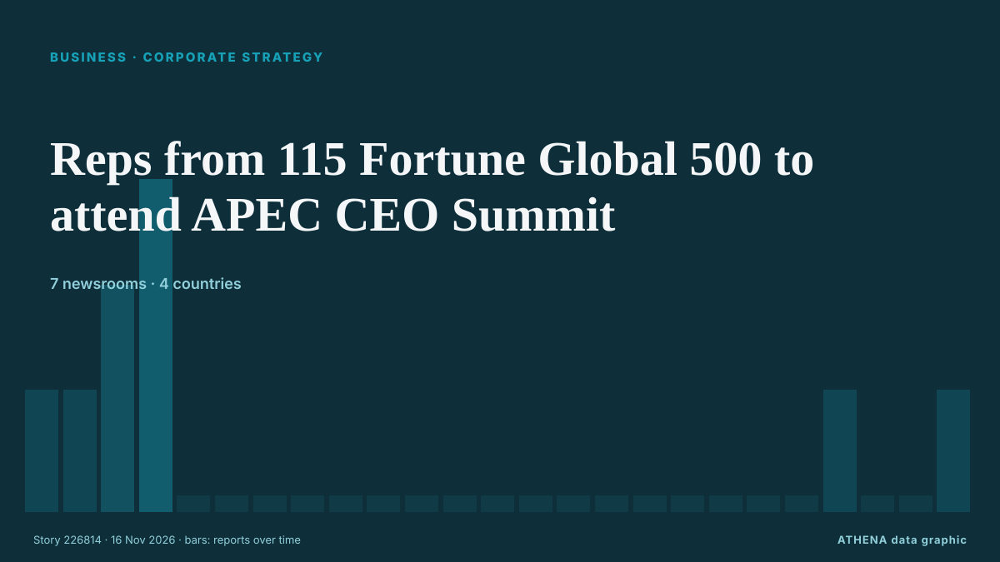

Εταιρική στρατηγική
ΧορηγούμενοΠαρουσιάζεται από  Cybernetics and Artificial Intelligence Lab Welcome to the Cybernetics and Artificial Intelligence Laboratory, established at the Department of Business Administration of the National and Kapodistrian University of Athens. The lab is headed by Professor Dimitrios Thomakos. The lab aims to do research that can be published in top venues. Our research uses tools and methods of Artificial Intelligence, and lies in the following areas: - Forecasting - Decision making - Cyber security - Finance We are always looking forward to collaborating with exceptional students!
Cybernetics and Artificial Intelligence Lab Welcome to the Cybernetics and Artificial Intelligence Laboratory, established at the Department of Business Administration of the National and Kapodistrian University of Athens. The lab is headed by Professor Dimitrios Thomakos. The lab aims to do research that can be published in top venues. Our research uses tools and methods of Artificial Intelligence, and lies in the following areas: - Forecasting - Decision making - Cyber security - Finance We are always looking forward to collaborating with exceptional students!
| 3 Νοε | 0 |
|---|---|
| 4 Νοε | 1 |
| 5 Νοε | 1 |
| 6 Νοε | 0 |
| 7 Νοε | 0 |
| 8 Νοε | 1 |
| 9 Νοε | 0 |
| 10 Νοε | 2 |
| 11 Νοε | 2 |
| 12 Νοε | 8 |
| 13 Νοε | 2 |
| 14 Νοε | 1 |
| 15 Νοε | 5 |
| 16 Νοε | 0 |
Οι τίτλοι των ειδήσεων παρουσιάζονται στα αγγλικά, όπως δημοσιεύτηκαν.

Reps from 115 Fortune Global 500 to attend APEC CEO Summit
Hong Kong will send one of its largest-ever delegations to the Apec CEO Summit in Shenzhen on Tuesday and Wednesday, with at least 54 business leaders set to attend, the South China Morning Post has… από South China Morning Post
NCCIA cracks down on illegal call centres, gambling apps
ISLAMABAD: The National Cyber Crime Investigation Agency (NCCIA) has tightened the noose around elements involved in online gambling, operating betting applications and running illegal call centres. από Business Recorder
Nvidia board approaches Arm CEO Rene Haas as employees push for Jensen Huang’s return: Reports
The meeting will focus on how to proceed after Huang said Sunday that he was unfaithful to his wife. από Moneyweb
Ex-Nvidia CEO Jensen Huang misled top lawyer on affair with Alice Huang, sources say
Huang described his relations with Alice Huang as typical for customer interactions. από The Straits Times
Jensen Huang Will Brief Lawmakers On Affair With Alleged Chinese Spy, Report Says
President Donald Trump was briefed about a year ago about those intelligence findings, The New York Times reported. από CNBC World
No, Tim Cook Isn’t Going to Be the Next CEO of Nvidia. Here Are 5 Candidates Who Might Be
There are a number of likely successors for the most important role in tech. από Inc.
RNZ reveals focus of inquiry into its $11.8m budget blowout
RNZ's fiscal hole inquiry review is to test in-house processes, approvals and more. από New Zealand Herald
Jensen Huang resigns as NVIDIA CEO, Colette Kress takes over
Kress joined Nvidia in 2013 as CFO and has regularly appeared on earnings calls with CEO Huang. από Express Tribune
Hapag-Lloyd Q3 2026 profit rises to €860 million
Hamburg, Germany (Ports Europe) November 12, 2026 – Hapag-Lloyd raised its 2026 earnings outlook after Group profit rose to €860 million in the third quarter of 2026, from €138 million in the third… από Ports Europe
Ottawa, province hope ‘aggressive package’ can prevent Stellantis plant sale: Joly
A day after threatening to sue Stellantis to recoup federal cash given to the automaker, Industry Minister Mélanie Joly says she’s still hopeful she can prevent the company from selling its Brampton… από The Canadian Press (via CityNews)
The head of the State Revenue Committee of Armenia discussed prospects for developing bilateral cooperation with the WCO Secretary General.
The Iranian citizen, who had escaped from the State Revenue Committee (SRC) of Armenia, has been found and detained, and a criminal case has been initiated in connection with the incident, informs… από NEWS.am (English)
Renny Harlin Launches Harlin House Fellowship for Emerging European Filmmakers, Taps Colin Trevorrow, Tim Miller as Advisors
Finnish director Renny Harlin has set up Harlin House, a production company that will mentor emerging European directors and help them turn their projects into genre features with commercial reach. από Variety
Botswana Eyes De Beers Tech Dividend
President Duma Boko says Botswana’s planned increase in De Beers ownership is as much a technology play as a diamond investment BONGANI MALUNGA President Duma Boko has positioned Botswana’s proposed… από The Botswana Gazette
Brampton plant sale a ‘partial solution,’ Carney says
Prime Minister Mark Carney’s government faces more questions about the future of Stellantis’s Brampton assembly plant. από The Globe and Mail
Saronic Awards $100 Million-Plus Contract for World’s Largest Shiplift at Texas Shipyard
Saronic has awarded a contract worth more than $100 million to Norway’s Syncrolift to design and supply what the companies say will be the world’s largest shiplift at its planned... από gCaptain
Burberry reports sales boost from trench coats and says turnaround ‘working’
The luxury fashion firm said revenues grew 6% to £1.1 billion in the six months to September 26. από Evening Standard (London)
CoreWeave adjusts AI data center expansion model as customer prepayments, contracts ease financing concerns
Neocloud provider CoreWeave announced a realignment of its financing strategy for data center expansion, shifting away from its previous heavy reliance on high-yield bonds toward borrowing backed by… από DigiTimes Asia
Poste Italiane posts best-ever profit for first nine months of year
(ANSA) - ROME, 12 NOV - Poste Italiane said Thursday that it made an adjusted net profit of 1.88 billion euros in the first nine months of this year, having generated income of 629 million euros in… από ANSA English